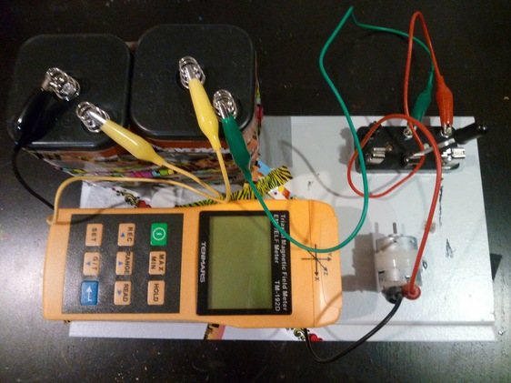

Do EM Calculations
This project is a simple bit of data manipulation for the output of a Tenmars Triaxial Magnetic Filed Meter, TM-192D ($225 from lessemf.com). The meter creates a csv file where the values are:
time stamp, x reading, y reading, z reading, combined reading
The software assumes one needs only the x, y, and z values.
The driver for the software requires a windows machine. I installed VMWare Fusion ($72), then Windows XP Pro. Another $40 went into wires and batteries.
Total cost: ~$350.
Program
The program is written in python and depends on 3 modules: Bunch, docopt, and csv.
% pvc.py -h Douglass-MBP usage: pyc.py [--bmG BMGFile] [--bmT BMTFile] [--emG EMGFile] [--emT EMTFile] [--root NAME]
Given 4 csv files, calculates the Poynting vector
optional arguments: --bmG BMGFile background mGauss csv file name [default: bmG.csv] --bmT BMGFile background mTesla csv file name [default: bmT.csv] --emG BMGFile experimental mGauss csv file name [default: emG.csv] --emT BMGFile experimental mTesla csv file name [default: emT.csv] -r NAME --root NAME
If the 4 files are named NAME_bmG.csv, NAME_bmT.csv, NAME_emG.csv, NAME_emT.csv, set this variable once. Note: Skip the "_" in the name.
Measuring device
A 12V DC motor is run right in front of the meter.

At home, it produced number like so:
% pvc.py -r home Douglass-MBP ave background E field: 0.01, 0.0, 1.693 ave background B field: 0.001, 0.0, 0.159523809524 ave experimental E field: 32.4277777778, 30.6722222222, 28.9333333333 ave experimental B field: 3.0195, 2.892, 2.654 Background Poynting Vector 0.0, 9.77619047619e-05, 0.0 Average Poynting Vector -2.26791595767, 1.35957135185, 1.16811055556